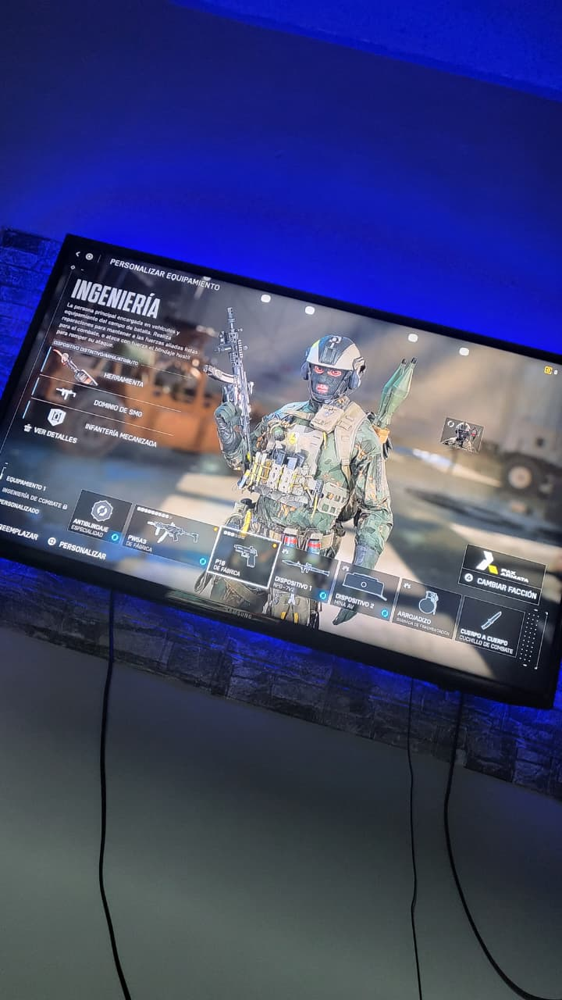

GAMING

Simuladores

Guerra virtual
"Desde siempre me han encantado los videojuegos. No solo por diversión, sino porque gracias a ellos me nació la curiosidad por saber cómo funcionaban las computadoras y consolas por dentro. Básicamente, mi pasión por la ingeniería y el hardware empezó con un control en la mano."